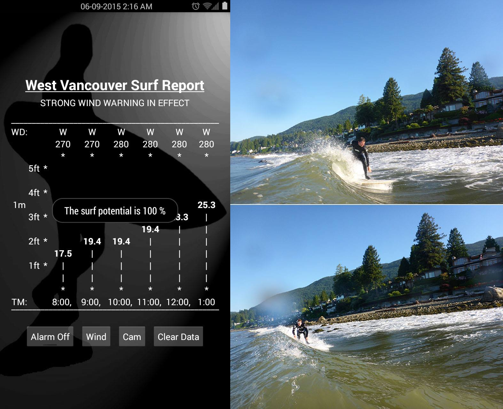
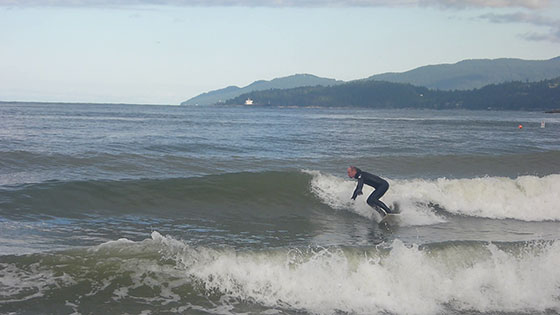
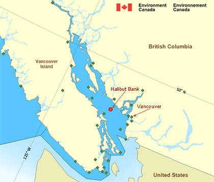

Application development by Scott Norrena.
No joke! This Android application predicts surf conditions for the beaches of West Vancouver.
Even those of you who know me casually should be aware that I became obsessed with surfing at the late age of 40 something. That fact combined with living a significant distance from a decent break has only made life that much more difficult. It has been a humbling experience trying to figure out how to surf.
I can honestly say that all the time I spent in my youth skateboarding and snowboarding did little to prepare me for the challenge. The main problem as I see it is simply an insufficient amount of time spent in the ocean catching waves. What can you do? At best, I make it out to Tofino on the west coast of Vancouver Island 3 or 4 times per year. Under these circumstances, my progress in the art of surfing has been painfully slow.
The point here is that it is essential to take advantage of every opportunity to surf where ever and when ever possible. After all, practise makes perfect.
Thankfully, on rare occasion, there is surf right here at home in West Vancouver. (Yes! In Vancouver!�.see the photo below) This miracle of nature only happens a few times per year and when it does we must be ready to go at a moment�s notice. The trick is knowing when to expect waves to hit the shore in West Vancouver. This would be the raison d'être for my Android application WestVanSurf.
Dundarave Beach - West Vancouver

Ambleside Beach - West Vancouver

Ambleside Beach - West Vancouver July 2017
I could tell you that I built this app to exercise some of the knowledge I gained on completion of a tutorial series on Restful web services for Android, but truthfully, I think this app was destined from the moment I first became aware of how the stars must align to make surf happen here at home. I would build a tool to predict Vancouver surf.
It all has to do with wind fetch. That is to say westerly wind blowing hard across the ocean in the Georgia Strait.
Thanks to the good folks at environment Canada, there is a buoy at Halibut bank in the center of the Georgia Strait that transmits data of wind direction, wind speed and swell/wave height to the world wide web in an RSS feed (Rich Site Summary).

My app polls the data from this feed and parses the information into usable components. The extracted data is then run through an algorithm which calculates the percentage chance for surfable wave conditions on the beaches of West Vancouver. The beauty in it is that once the application is up and running, theoretically, all I would really need to do is wait for the alarm to go off then hit the beach.
Praying for surf
Scott
For those interested, the following is some technical information on the workings of this application.
At launch, the app will check for locally stored data before displaying a rudimentary graph of six hours of information of wind direction, wind speed, wave height. The display will also blink stored information from environment Canada of wind storm warnings and display a temporary pop up message showing the percentage chance for surf conditions based on the currently stored data.
The user will then choose between four buttons to set the audio alarm, check the wind warning forecast, view a web camera for live conditions on the beach at Dundarave West Vancouver or clear all stored data in the phone and start fresh.
On first run the app will start a process that checks two RSS feeds every ten minutes. The service will initiate an HTTP connection to download the XML file from two environment Canada internet sources. The first file is data from the Halibut Bank Buoy. The second file includes information of wind warning and forecast weather for the Strait of Georgia north of Nanaimo.
The XML data from each of these two feeds is parsed to extract pertinent information and saved locally in the phones internal storage. As new data records are added from the Halibut bank feed, the old ones roll out. The app stores a maximum of six hours of data for user interface display, however, it is only the last three hours of data that are used to predict surf conditions. The wind storm warning information is updated hourly as each new file is downloaded.
Surf conditions in West Vancouver are dependent on three factors. 1) Westerly wind. 2) Wind speed. 3) Wave/Swell height. The percentage chance for surf is graded using the last three hours of data for each of these three criterion. The primary criterion of wind direction is used to filter the data as wind speed and wave height would be meaningless for our purpose without westerly wind. Good wind direction is calculated as being between 270 degrees west and 315 degrees north west. Wind speed should be at least 15 knots and swell/wave height should be 3.2 feet/1 meter. The default final grade is a weighted 30% for wind direction, 30% for wind speed and 40% for wave height for a total grade out of 100%.
If the total surf grade hits the % mark set by the user, an alarm will sound (A version of the song WipeOut recorded by yours truly) and text messages sent out on a distribution list. The text message is e-mail sent to a mobile phone number.
The text message data includes the calculated percent chance for surf and all information of the current report for wind and wave conditions at Halibut bank. I have also programmed a text to speech reader to read out the surfgrade.
Subs2go is a dynamic web site that will allow users to search a database for last minute substitute fitness instructors.
This dynamic web site is being build using Java on the Spring Boot framework including Thymeleaf for the front end view, Hibernate for object relational mapping and MySql as database.
The site is currently in active development.
Additional information on the development of this site may be viewed here.
DropInRegistration is a Java powered dynamic web application that manages drop in hockey players for the Britannia Friday night hockey group.
The application is powered by Java JSP/Servlet technology for deployment on a Java application server.
Details on the build and function of this app may be viewed here.
FAQ • Terms • Privacy Policy • About Us
rsnorrena.com © 2014